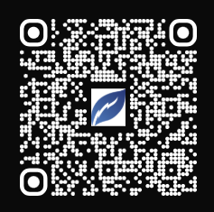
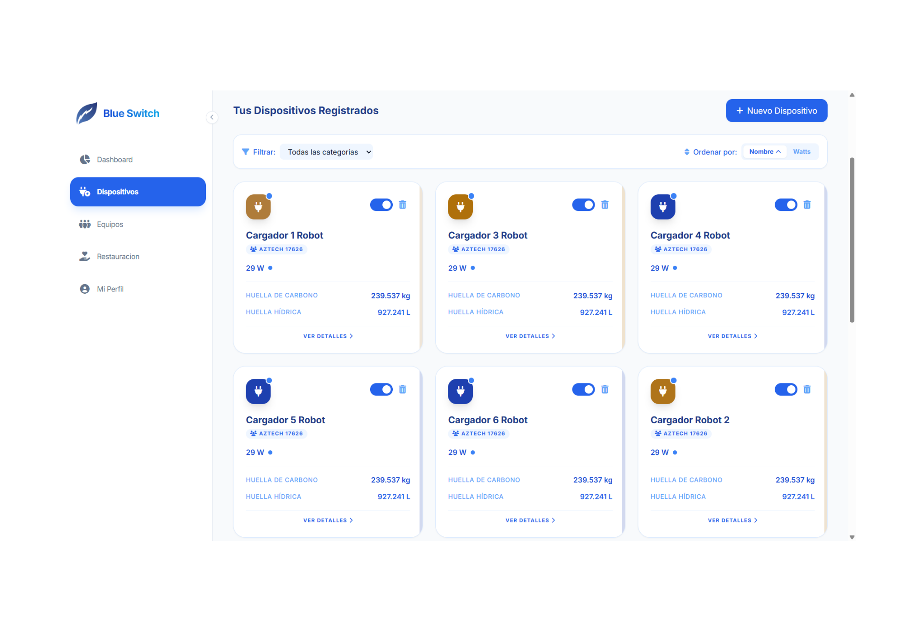
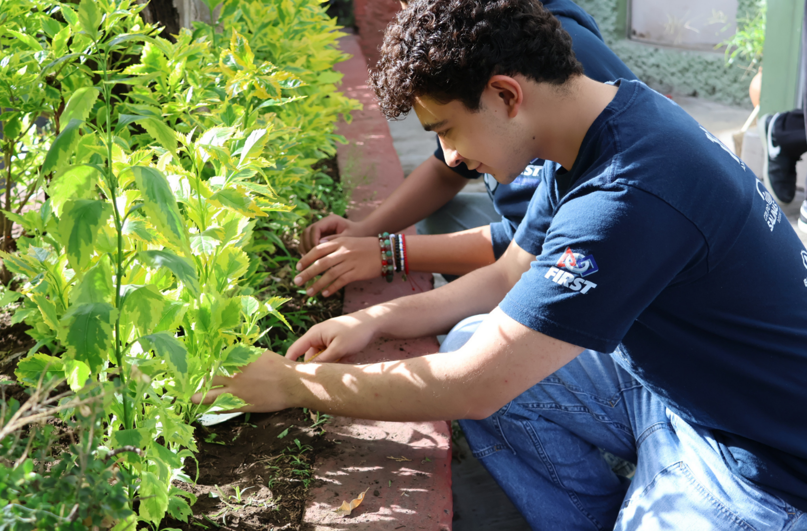
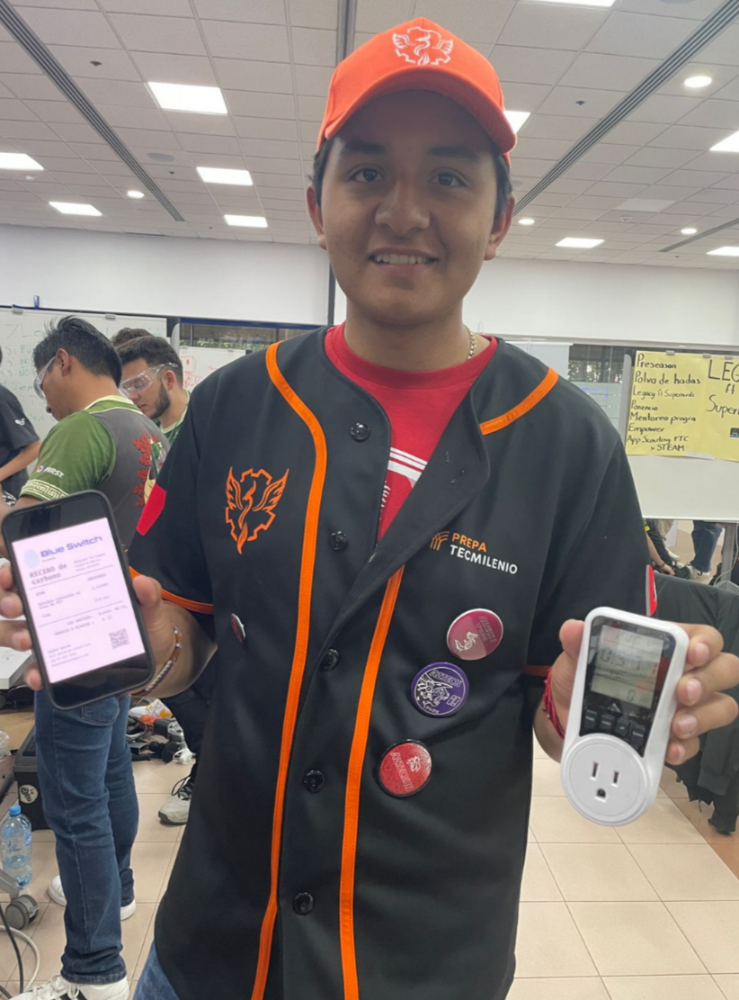
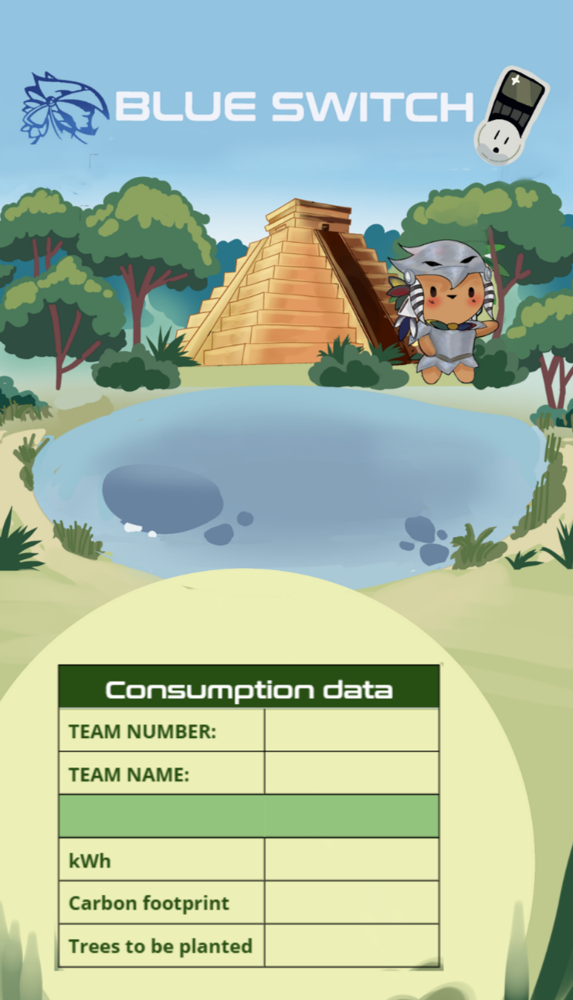

Un plan de acción en 3 fases
Nuestro Pilar Ambiental funciona para que el impacto no se quede en la intención. Primero medimos, porque no se puede mejorar lo que no se conoce. Luego actuamos, porque los números solo importan cuando se convierten en algo real. Y finalmente expandimos, porque la conciencia ambiental vale más cuando se comparte.
Medir
Entender nuestro impacto
Blue Switch empezó como una hoja de cálculo, se convirtió en página web en 2022 y esta temporada recibió constantes mejoras de diseño y funcionales para hacerlo más accesible. Usando la fórmula oficial de la SEMARNAT (Secretaría de Medio Ambiente y Recursos Naturales de México), calcula las emisiones de CO₂ a partir del consumo de energía y te dice exactamente cuántos árboles necesitas plantar para compensarlas.



Actuar
Una colaboración con nuestra comunidad STEM
Después de calcular nuestro CO₂ total, colaboramos con los especialistas en ingeniería ambiental de Un Nuevo Bosque en la restauración de flora nativa, para asegurar la introducción correcta de especies endémicas. Es una iniciativa liderada por nuestro patrocinador Grupo Salinas, que refleja un compromiso compartido con la sostenibilidad.
En 2025 plantamos 8,472 árboles, que compensaron aproximadamente 101 toneladas de CO₂.

Expandir
Compartir la responsabilidad sostenible
Esta temporada dimos el primer paso para crear una Red Blue Switch en eventos FIRST de México. Empezamos a llevar medidores de kilowatt-hora para monitorear el consumo de energía en el pit de al menos 3 equipos FTC por evento. Al final de cada evento, el equipo recibió un ticket personalizado con sus resultados, generando conciencia sobre su uso de energía y su impacto ambiental.

